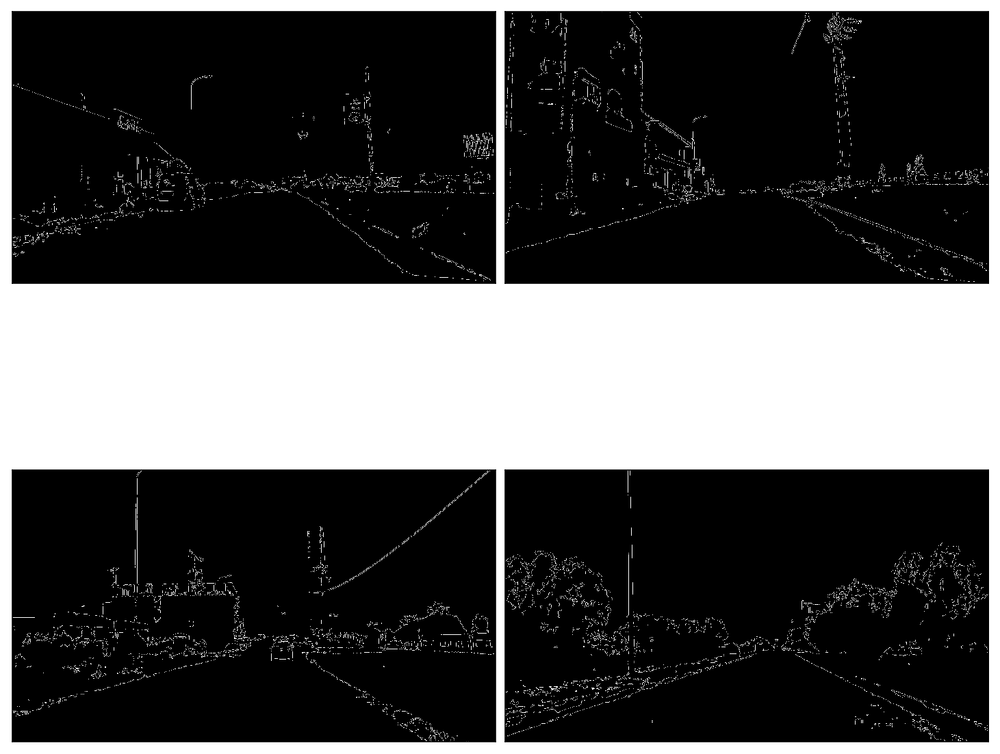

Source code available at my
Github account
Sources:
Canny edge detection paper
OvenCV Tutorials
Convex Hull algorithm
Hough transform
Udacity Open Source Self-Driving Car
Udacity's Computational Photography course
Comma AI
Comma AI research
